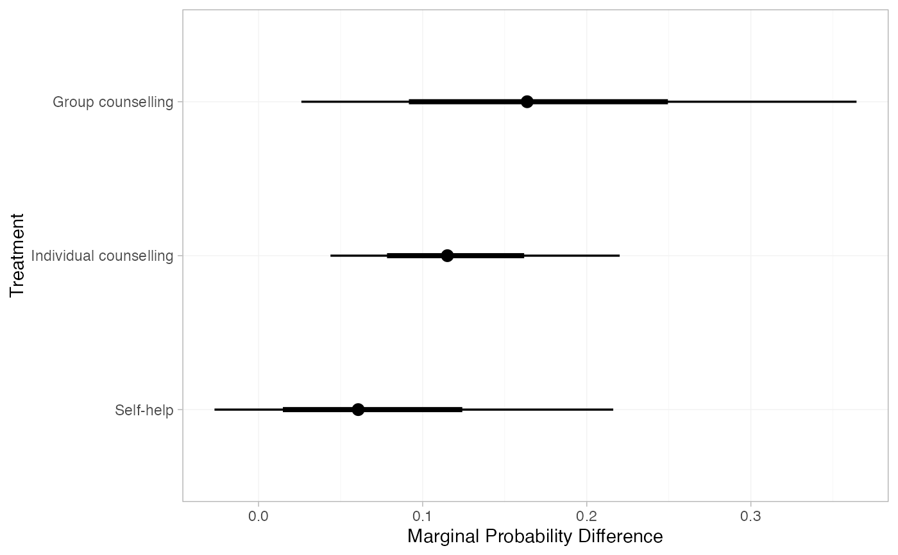
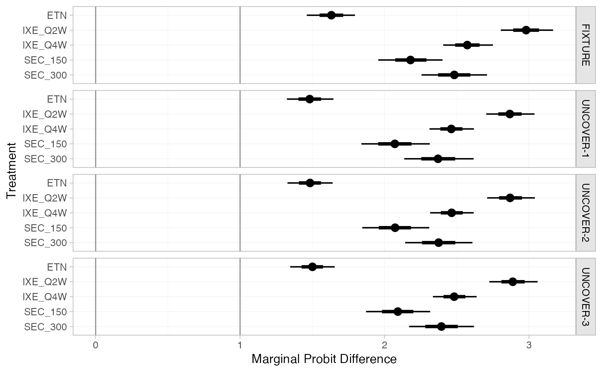
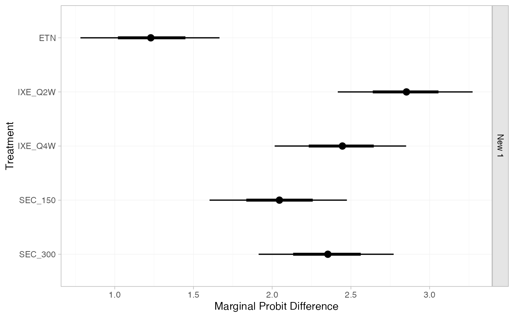
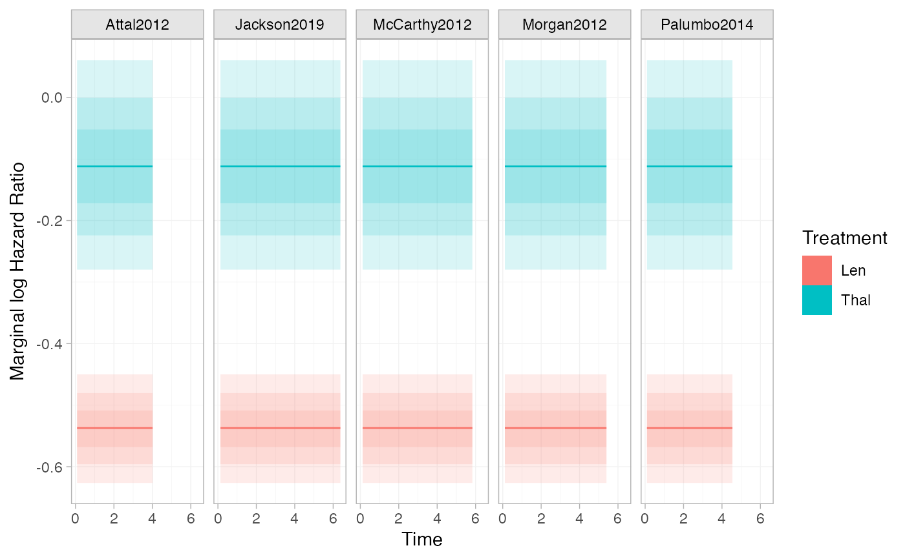
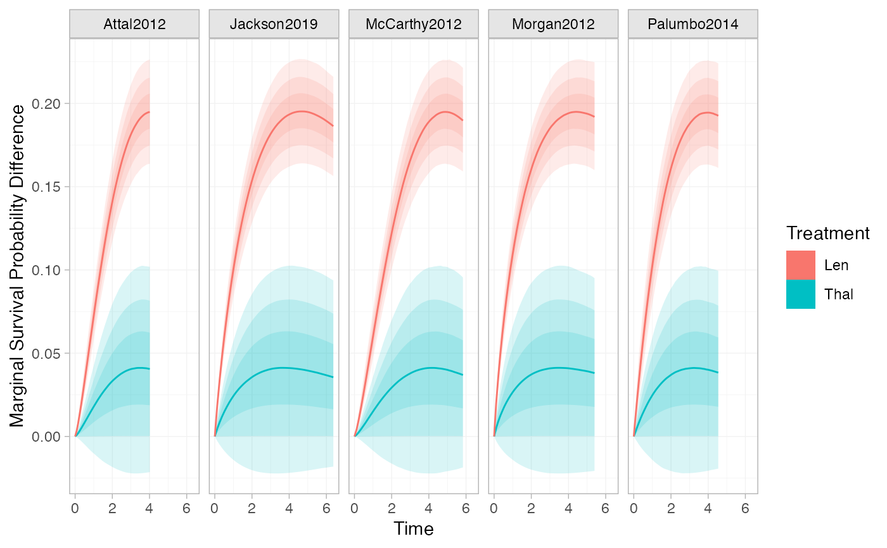

Generate population-average marginal treatment effects. These are formed from
population-average absolute predictions, so this function is a wrapper around
predict.stan_nma().
Arguments
- object
A
stan_nmaobject created bynma().- ...
Arguments passed to
predict.stan_nma(), for example to specify the covariate distribution and baseline risk for a target population, e.g.newdata,baseline, and related arguments. For survival outcomes,typecan also be specified to determine the quantity from which to form a marginal effect. For example,type = "hazard"withmtype = "ratio"produces marginal hazard ratios,type = "median"withmtype = "difference"produces marginal median survival time differences, and so on.- mtype
The type of marginal effect to construct from the average absolute effects, either
"difference"(the default) for a difference of absolute effects such as a risk difference,"ratio"for a ratio of absolute effects such as a risk ratio, or"link"for a difference on the scale of the link function used in fitting the model such as a marginal log odds ratio.- all_contrasts
Logical, generate estimates for all contrasts (
TRUE), or just the "basic" contrasts against the network reference treatment (FALSE)? DefaultFALSE.- trt_ref
Reference treatment to construct relative effects against, if
all_contrasts = FALSE. By default, relative effects will be against the network reference treatment. Coerced to character string.- probs
Numeric vector of quantiles of interest to present in computed summary, default
c(0.025, 0.25, 0.5, 0.75, 0.975)- predictive_distribution
Logical, when a random effects model has been fitted, should the predictive distribution for marginal effects in a new study be returned? Default
FALSE.- summary
Logical, calculate posterior summaries? Default
TRUE.
Value
A nma_summary object if summary = TRUE, otherwise a list
containing a 3D MCMC array of samples and (for regression models) a data
frame of study information.
Examples
## Smoking cessation
# \donttest{
# Run smoking RE NMA example if not already available
if (!exists("smk_fit_RE")) example("example_smk_re", run.donttest = TRUE)
# }
# \donttest{
# Marginal risk difference in each study population in the network
marginal_effects(smk_fit_RE, mtype = "difference")
#> ---------------------------------------------------------------------- Study: 1 ----
#>
#> mean sd 2.5% 25% 50% 75% 97.5% Bulk_ESS
#> marg[1: Group counselling] 0.10 0.06 0.01 0.06 0.09 0.14 0.25 1933
#> marg[1: Individual counselling] 0.07 0.03 0.02 0.05 0.06 0.09 0.15 1477
#> marg[1: Self-help] 0.04 0.04 -0.02 0.01 0.03 0.06 0.13 2061
#> Tail_ESS Rhat
#> marg[1: Group counselling] 2407 1
#> marg[1: Individual counselling] 1953 1
#> marg[1: Self-help] 2513 1
#>
#> ---------------------------------------------------------------------- Study: 2 ----
#>
#> mean sd 2.5% 25% 50% 75% 97.5% Bulk_ESS
#> marg[2: Group counselling] 0.12 0.07 0.01 0.06 0.11 0.16 0.30 2288
#> marg[2: Individual counselling] 0.08 0.05 0.02 0.05 0.07 0.11 0.20 2472
#> marg[2: Self-help] 0.05 0.05 -0.03 0.01 0.04 0.07 0.17 2644
#> Tail_ESS Rhat
#> marg[2: Group counselling] 2288 1
#> marg[2: Individual counselling] 2641 1
#> marg[2: Self-help] 2528 1
#>
#> ---------------------------------------------------------------------- Study: 3 ----
#>
#> mean sd 2.5% 25% 50% 75% 97.5% Bulk_ESS
#> marg[3: Group counselling] 0.16 0.08 0.02 0.10 0.15 0.21 0.34 1963
#> marg[3: Individual counselling] 0.11 0.04 0.04 0.08 0.11 0.14 0.20 1200
#> marg[3: Self-help] 0.06 0.06 -0.02 0.02 0.06 0.10 0.20 1994
#> Tail_ESS Rhat
#> marg[3: Group counselling] 2096 1
#> marg[3: Individual counselling] 1834 1
#> marg[3: Self-help] 2497 1
#>
#> ---------------------------------------------------------------------- Study: 4 ----
#>
#> mean sd 2.5% 25% 50% 75% 97.5% Bulk_ESS
#> marg[4: Group counselling] 0.04 0.03 0.00 0.02 0.03 0.05 0.12 2516
#> marg[4: Individual counselling] 0.02 0.02 0.00 0.01 0.02 0.03 0.07 2375
#> marg[4: Self-help] 0.01 0.02 -0.01 0.00 0.01 0.02 0.06 2311
#> Tail_ESS Rhat
#> marg[4: Group counselling] 2242 1
#> marg[4: Individual counselling] 2591 1
#> marg[4: Self-help] 2577 1
#>
#> ---------------------------------------------------------------------- Study: 5 ----
#>
#> mean sd 2.5% 25% 50% 75% 97.5% Bulk_ESS
#> marg[5: Group counselling] 0.16 0.08 0.02 0.10 0.15 0.21 0.34 1958
#> marg[5: Individual counselling] 0.11 0.04 0.04 0.08 0.11 0.13 0.21 1216
#> marg[5: Self-help] 0.06 0.06 -0.02 0.02 0.05 0.10 0.20 2015
#> Tail_ESS Rhat
#> marg[5: Group counselling] 1987 1
#> marg[5: Individual counselling] 1735 1
#> marg[5: Self-help] 2545 1
#>
#> ---------------------------------------------------------------------- Study: 6 ----
#>
#> mean sd 2.5% 25% 50% 75% 97.5% Bulk_ESS
#> marg[6: Group counselling] 0.07 0.05 0.00 0.03 0.06 0.09 0.21 2890
#> marg[6: Individual counselling] 0.04 0.03 0.01 0.02 0.04 0.06 0.12 2563
#> marg[6: Self-help] 0.03 0.03 -0.01 0.01 0.02 0.04 0.10 2367
#> Tail_ESS Rhat
#> marg[6: Group counselling] 2115 1
#> marg[6: Individual counselling] 2208 1
#> marg[6: Self-help] 2725 1
#>
#> ---------------------------------------------------------------------- Study: 7 ----
#>
#> mean sd 2.5% 25% 50% 75% 97.5% Bulk_ESS
#> marg[7: Group counselling] 0.09 0.06 0.01 0.05 0.08 0.12 0.22 2361
#> marg[7: Individual counselling] 0.06 0.03 0.02 0.04 0.05 0.07 0.13 1858
#> marg[7: Self-help] 0.03 0.03 -0.01 0.01 0.03 0.05 0.12 2171
#> Tail_ESS Rhat
#> marg[7: Group counselling] 2139 1
#> marg[7: Individual counselling] 2084 1
#> marg[7: Self-help] 2632 1
#>
#> ---------------------------------------------------------------------- Study: 8 ----
#>
#> mean sd 2.5% 25% 50% 75% 97.5% Bulk_ESS
#> marg[8: Group counselling] 0.11 0.07 0.01 0.06 0.10 0.15 0.29 2447
#> marg[8: Individual counselling] 0.08 0.04 0.02 0.05 0.07 0.10 0.17 2251
#> marg[8: Self-help] 0.04 0.04 -0.02 0.01 0.03 0.06 0.16 2255
#> Tail_ESS Rhat
#> marg[8: Group counselling] 1869 1
#> marg[8: Individual counselling] 2149 1
#> marg[8: Self-help] 2559 1
#>
#> ---------------------------------------------------------------------- Study: 9 ----
#>
#> mean sd 2.5% 25% 50% 75% 97.5% Bulk_ESS
#> marg[9: Group counselling] 0.19 0.09 0.03 0.12 0.18 0.24 0.39 2059
#> marg[9: Individual counselling] 0.13 0.05 0.05 0.09 0.13 0.16 0.26 1500
#> marg[9: Self-help] 0.08 0.07 -0.03 0.03 0.07 0.11 0.24 2037
#> Tail_ESS Rhat
#> marg[9: Group counselling] 1853 1
#> marg[9: Individual counselling] 1959 1
#> marg[9: Self-help] 2512 1
#>
#> --------------------------------------------------------------------- Study: 10 ----
#>
#> mean sd 2.5% 25% 50% 75% 97.5% Bulk_ESS
#> marg[10: Group counselling] 0.16 0.08 0.03 0.11 0.16 0.21 0.35 1988
#> marg[10: Individual counselling] 0.11 0.04 0.04 0.08 0.11 0.14 0.21 1201
#> marg[10: Self-help] 0.07 0.06 -0.03 0.03 0.06 0.10 0.21 1992
#> Tail_ESS Rhat
#> marg[10: Group counselling] 2091 1
#> marg[10: Individual counselling] 1681 1
#> marg[10: Self-help] 2581 1
#>
#> --------------------------------------------------------------------- Study: 11 ----
#>
#> mean sd 2.5% 25% 50% 75% 97.5% Bulk_ESS
#> marg[11: Group counselling] 0.05 0.03 0.01 0.03 0.05 0.07 0.13 2065
#> marg[11: Individual counselling] 0.03 0.02 0.01 0.02 0.03 0.04 0.07 1447
#> marg[11: Self-help] 0.02 0.02 -0.01 0.01 0.02 0.03 0.06 1984
#> Tail_ESS Rhat
#> marg[11: Group counselling] 1916 1
#> marg[11: Individual counselling] 2142 1
#> marg[11: Self-help] 2433 1
#>
#> --------------------------------------------------------------------- Study: 12 ----
#>
#> mean sd 2.5% 25% 50% 75% 97.5% Bulk_ESS
#> marg[12: Group counselling] 0.15 0.08 0.02 0.10 0.14 0.20 0.33 1952
#> marg[12: Individual counselling] 0.10 0.04 0.04 0.08 0.10 0.13 0.20 1201
#> marg[12: Self-help] 0.06 0.05 -0.02 0.02 0.05 0.09 0.19 2023
#> Tail_ESS Rhat
#> marg[12: Group counselling] 2080 1
#> marg[12: Individual counselling] 1751 1
#> marg[12: Self-help] 2598 1
#>
#> --------------------------------------------------------------------- Study: 13 ----
#>
#> mean sd 2.5% 25% 50% 75% 97.5% Bulk_ESS
#> marg[13: Group counselling] 0.11 0.07 0.02 0.06 0.10 0.15 0.28 2353
#> marg[13: Individual counselling] 0.08 0.04 0.02 0.05 0.07 0.10 0.16 1894
#> marg[13: Self-help] 0.04 0.04 -0.02 0.01 0.03 0.06 0.16 2200
#> Tail_ESS Rhat
#> marg[13: Group counselling] 2448 1
#> marg[13: Individual counselling] 2495 1
#> marg[13: Self-help] 2507 1
#>
#> --------------------------------------------------------------------- Study: 14 ----
#>
#> mean sd 2.5% 25% 50% 75% 97.5% Bulk_ESS
#> marg[14: Group counselling] 0.13 0.07 0.02 0.08 0.12 0.18 0.31 2043
#> marg[14: Individual counselling] 0.09 0.04 0.03 0.07 0.09 0.11 0.18 1291
#> marg[14: Self-help] 0.05 0.05 -0.02 0.02 0.04 0.08 0.17 2044
#> Tail_ESS Rhat
#> marg[14: Group counselling] 2155 1
#> marg[14: Individual counselling] 1853 1
#> marg[14: Self-help] 2564 1
#>
#> --------------------------------------------------------------------- Study: 15 ----
#>
#> mean sd 2.5% 25% 50% 75% 97.5% Bulk_ESS
#> marg[15: Group counselling] 0.11 0.07 0.01 0.07 0.10 0.15 0.27 2566
#> marg[15: Individual counselling] 0.08 0.05 0.02 0.05 0.07 0.11 0.19 2680
#> marg[15: Self-help] 0.05 0.05 -0.02 0.01 0.03 0.07 0.17 2370
#> Tail_ESS Rhat
#> marg[15: Group counselling] 2124 1
#> marg[15: Individual counselling] 2495 1
#> marg[15: Self-help] 2530 1
#>
#> --------------------------------------------------------------------- Study: 16 ----
#>
#> mean sd 2.5% 25% 50% 75% 97.5% Bulk_ESS
#> marg[16: Group counselling] 0.12 0.07 0.02 0.07 0.11 0.15 0.28 2145
#> marg[16: Individual counselling] 0.08 0.04 0.02 0.05 0.07 0.10 0.17 1615
#> marg[16: Self-help] 0.04 0.04 -0.02 0.02 0.04 0.07 0.15 2055
#> Tail_ESS Rhat
#> marg[16: Group counselling] 2200 1
#> marg[16: Individual counselling] 2037 1
#> marg[16: Self-help] 2448 1
#>
#> --------------------------------------------------------------------- Study: 17 ----
#>
#> mean sd 2.5% 25% 50% 75% 97.5% Bulk_ESS
#> marg[17: Group counselling] 0.14 0.07 0.02 0.09 0.13 0.18 0.31 1944
#> marg[17: Individual counselling] 0.09 0.04 0.03 0.07 0.09 0.11 0.18 1195
#> marg[17: Self-help] 0.05 0.05 -0.02 0.02 0.05 0.08 0.17 1994
#> Tail_ESS Rhat
#> marg[17: Group counselling] 2120 1
#> marg[17: Individual counselling] 1700 1
#> marg[17: Self-help] 2512 1
#>
#> --------------------------------------------------------------------- Study: 18 ----
#>
#> mean sd 2.5% 25% 50% 75% 97.5% Bulk_ESS
#> marg[18: Group counselling] 0.12 0.07 0.02 0.07 0.11 0.16 0.30 1962
#> marg[18: Individual counselling] 0.08 0.04 0.03 0.06 0.08 0.10 0.17 1296
#> marg[18: Self-help] 0.05 0.04 -0.02 0.02 0.04 0.07 0.16 2059
#> Tail_ESS Rhat
#> marg[18: Group counselling] 2251 1
#> marg[18: Individual counselling] 1752 1
#> marg[18: Self-help] 2245 1
#>
#> --------------------------------------------------------------------- Study: 19 ----
#>
#> mean sd 2.5% 25% 50% 75% 97.5% Bulk_ESS
#> marg[19: Group counselling] 0.18 0.09 0.03 0.12 0.18 0.23 0.38 1949
#> marg[19: Individual counselling] 0.13 0.05 0.05 0.10 0.12 0.16 0.23 1202
#> marg[19: Self-help] 0.08 0.06 -0.03 0.03 0.07 0.11 0.23 2012
#> Tail_ESS Rhat
#> marg[19: Group counselling] 2115 1
#> marg[19: Individual counselling] 1773 1
#> marg[19: Self-help] 2530 1
#>
#> --------------------------------------------------------------------- Study: 20 ----
#>
#> mean sd 2.5% 25% 50% 75% 97.5% Bulk_ESS
#> marg[20: Group counselling] 0.10 0.06 0.01 0.06 0.09 0.13 0.24 1961
#> marg[20: Individual counselling] 0.07 0.03 0.02 0.05 0.06 0.08 0.13 1212
#> marg[20: Self-help] 0.04 0.04 -0.01 0.01 0.03 0.06 0.13 1999
#> Tail_ESS Rhat
#> marg[20: Group counselling] 2189 1
#> marg[20: Individual counselling] 1691 1
#> marg[20: Self-help] 2483 1
#>
#> --------------------------------------------------------------------- Study: 21 ----
#>
#> mean sd 2.5% 25% 50% 75% 97.5% Bulk_ESS
#> marg[21: Group counselling] 0.22 0.10 0.04 0.15 0.22 0.28 0.42 2288
#> marg[21: Individual counselling] 0.17 0.06 0.06 0.12 0.16 0.20 0.29 1597
#> marg[21: Self-help] 0.09 0.08 -0.06 0.04 0.09 0.14 0.27 2231
#> Tail_ESS Rhat
#> marg[21: Group counselling] 2506 1
#> marg[21: Individual counselling] 2385 1
#> marg[21: Self-help] 2462 1
#>
#> --------------------------------------------------------------------- Study: 22 ----
#>
#> mean sd 2.5% 25% 50% 75% 97.5% Bulk_ESS
#> marg[22: Group counselling] 0.13 0.08 0.02 0.07 0.12 0.17 0.31 3023
#> marg[22: Individual counselling] 0.10 0.06 0.02 0.05 0.08 0.13 0.23 2522
#> marg[22: Self-help] 0.05 0.05 -0.03 0.02 0.04 0.07 0.19 2596
#> Tail_ESS Rhat
#> marg[22: Group counselling] 2465 1
#> marg[22: Individual counselling] 2587 1
#> marg[22: Self-help] 2435 1
#>
#> --------------------------------------------------------------------- Study: 23 ----
#>
#> mean sd 2.5% 25% 50% 75% 97.5% Bulk_ESS
#> marg[23: Group counselling] 0.14 0.08 0.02 0.08 0.13 0.19 0.33 3276
#> marg[23: Individual counselling] 0.10 0.05 0.02 0.06 0.09 0.13 0.23 3090
#> marg[23: Self-help] 0.06 0.06 -0.02 0.02 0.04 0.08 0.21 2492
#> Tail_ESS Rhat
#> marg[23: Group counselling] 2199 1
#> marg[23: Individual counselling] 2958 1
#> marg[23: Self-help] 2540 1
#>
#> --------------------------------------------------------------------- Study: 24 ----
#>
#> mean sd 2.5% 25% 50% 75% 97.5% Bulk_ESS
#> marg[24: Group counselling] 0.11 0.07 0.01 0.05 0.09 0.14 0.29 2879
#> marg[24: Individual counselling] 0.07 0.05 0.01 0.04 0.06 0.10 0.20 3252
#> marg[24: Self-help] 0.04 0.05 -0.02 0.01 0.03 0.06 0.18 2404
#> Tail_ESS Rhat
#> marg[24: Group counselling] 2558 1
#> marg[24: Individual counselling] 2452 1
#> marg[24: Self-help] 2528 1
#>
# Since there are no covariates in the model, the marginal and conditional
# (log) odds ratios here coincide
marginal_effects(smk_fit_RE, mtype = "link")
#> ---------------------------------------------------------------------- Study: 1 ----
#>
#> mean sd 2.5% 25% 50% 75% 97.5% Bulk_ESS
#> marg[1: Group counselling] 1.08 0.42 0.24 0.81 1.08 1.34 1.93 1927
#> marg[1: Individual counselling] 0.83 0.24 0.37 0.67 0.82 0.99 1.34 1173
#> marg[1: Self-help] 0.50 0.40 -0.29 0.24 0.49 0.76 1.32 1990
#> Tail_ESS Rhat
#> marg[1: Group counselling] 2122 1
#> marg[1: Individual counselling] 1735 1
#> marg[1: Self-help] 2528 1
#>
#> ---------------------------------------------------------------------- Study: 2 ----
#>
#> mean sd 2.5% 25% 50% 75% 97.5% Bulk_ESS
#> marg[2: Group counselling] 1.08 0.42 0.24 0.81 1.08 1.34 1.93 1927
#> marg[2: Individual counselling] 0.83 0.24 0.37 0.67 0.82 0.99 1.34 1173
#> marg[2: Self-help] 0.50 0.40 -0.29 0.24 0.49 0.76 1.32 1990
#> Tail_ESS Rhat
#> marg[2: Group counselling] 2122 1
#> marg[2: Individual counselling] 1735 1
#> marg[2: Self-help] 2528 1
#>
#> ---------------------------------------------------------------------- Study: 3 ----
#>
#> mean sd 2.5% 25% 50% 75% 97.5% Bulk_ESS
#> marg[3: Group counselling] 1.08 0.42 0.24 0.81 1.08 1.34 1.93 1927
#> marg[3: Individual counselling] 0.83 0.24 0.37 0.67 0.82 0.99 1.34 1173
#> marg[3: Self-help] 0.50 0.40 -0.29 0.24 0.49 0.76 1.32 1990
#> Tail_ESS Rhat
#> marg[3: Group counselling] 2122 1
#> marg[3: Individual counselling] 1735 1
#> marg[3: Self-help] 2528 1
#>
#> ---------------------------------------------------------------------- Study: 4 ----
#>
#> mean sd 2.5% 25% 50% 75% 97.5% Bulk_ESS
#> marg[4: Group counselling] 1.08 0.42 0.24 0.81 1.08 1.34 1.93 1927
#> marg[4: Individual counselling] 0.83 0.24 0.37 0.67 0.82 0.99 1.34 1173
#> marg[4: Self-help] 0.50 0.40 -0.29 0.24 0.49 0.76 1.32 1990
#> Tail_ESS Rhat
#> marg[4: Group counselling] 2122 1
#> marg[4: Individual counselling] 1735 1
#> marg[4: Self-help] 2528 1
#>
#> ---------------------------------------------------------------------- Study: 5 ----
#>
#> mean sd 2.5% 25% 50% 75% 97.5% Bulk_ESS
#> marg[5: Group counselling] 1.08 0.42 0.24 0.81 1.08 1.34 1.93 1927
#> marg[5: Individual counselling] 0.83 0.24 0.37 0.67 0.82 0.99 1.34 1173
#> marg[5: Self-help] 0.50 0.40 -0.29 0.24 0.49 0.76 1.32 1990
#> Tail_ESS Rhat
#> marg[5: Group counselling] 2122 1
#> marg[5: Individual counselling] 1735 1
#> marg[5: Self-help] 2528 1
#>
#> ---------------------------------------------------------------------- Study: 6 ----
#>
#> mean sd 2.5% 25% 50% 75% 97.5% Bulk_ESS
#> marg[6: Group counselling] 1.08 0.42 0.24 0.81 1.08 1.34 1.93 1927
#> marg[6: Individual counselling] 0.83 0.24 0.37 0.67 0.82 0.99 1.34 1173
#> marg[6: Self-help] 0.50 0.40 -0.29 0.24 0.49 0.76 1.32 1990
#> Tail_ESS Rhat
#> marg[6: Group counselling] 2122 1
#> marg[6: Individual counselling] 1735 1
#> marg[6: Self-help] 2528 1
#>
#> ---------------------------------------------------------------------- Study: 7 ----
#>
#> mean sd 2.5% 25% 50% 75% 97.5% Bulk_ESS
#> marg[7: Group counselling] 1.08 0.42 0.24 0.81 1.08 1.34 1.93 1927
#> marg[7: Individual counselling] 0.83 0.24 0.37 0.67 0.82 0.99 1.34 1173
#> marg[7: Self-help] 0.50 0.40 -0.29 0.24 0.49 0.76 1.32 1990
#> Tail_ESS Rhat
#> marg[7: Group counselling] 2122 1
#> marg[7: Individual counselling] 1735 1
#> marg[7: Self-help] 2528 1
#>
#> ---------------------------------------------------------------------- Study: 8 ----
#>
#> mean sd 2.5% 25% 50% 75% 97.5% Bulk_ESS
#> marg[8: Group counselling] 1.08 0.42 0.24 0.81 1.08 1.34 1.93 1927
#> marg[8: Individual counselling] 0.83 0.24 0.37 0.67 0.82 0.99 1.34 1173
#> marg[8: Self-help] 0.50 0.40 -0.29 0.24 0.49 0.76 1.32 1990
#> Tail_ESS Rhat
#> marg[8: Group counselling] 2122 1
#> marg[8: Individual counselling] 1735 1
#> marg[8: Self-help] 2528 1
#>
#> ---------------------------------------------------------------------- Study: 9 ----
#>
#> mean sd 2.5% 25% 50% 75% 97.5% Bulk_ESS
#> marg[9: Group counselling] 1.08 0.42 0.24 0.81 1.08 1.34 1.93 1927
#> marg[9: Individual counselling] 0.83 0.24 0.37 0.67 0.82 0.99 1.34 1173
#> marg[9: Self-help] 0.50 0.40 -0.29 0.24 0.49 0.76 1.32 1990
#> Tail_ESS Rhat
#> marg[9: Group counselling] 2122 1
#> marg[9: Individual counselling] 1735 1
#> marg[9: Self-help] 2528 1
#>
#> --------------------------------------------------------------------- Study: 10 ----
#>
#> mean sd 2.5% 25% 50% 75% 97.5% Bulk_ESS
#> marg[10: Group counselling] 1.08 0.42 0.24 0.81 1.08 1.34 1.93 1927
#> marg[10: Individual counselling] 0.83 0.24 0.37 0.67 0.82 0.99 1.34 1173
#> marg[10: Self-help] 0.50 0.40 -0.29 0.24 0.49 0.76 1.32 1990
#> Tail_ESS Rhat
#> marg[10: Group counselling] 2122 1
#> marg[10: Individual counselling] 1735 1
#> marg[10: Self-help] 2528 1
#>
#> --------------------------------------------------------------------- Study: 11 ----
#>
#> mean sd 2.5% 25% 50% 75% 97.5% Bulk_ESS
#> marg[11: Group counselling] 1.08 0.42 0.24 0.81 1.08 1.34 1.93 1927
#> marg[11: Individual counselling] 0.83 0.24 0.37 0.67 0.82 0.99 1.34 1173
#> marg[11: Self-help] 0.50 0.40 -0.29 0.24 0.49 0.76 1.32 1990
#> Tail_ESS Rhat
#> marg[11: Group counselling] 2122 1
#> marg[11: Individual counselling] 1735 1
#> marg[11: Self-help] 2528 1
#>
#> --------------------------------------------------------------------- Study: 12 ----
#>
#> mean sd 2.5% 25% 50% 75% 97.5% Bulk_ESS
#> marg[12: Group counselling] 1.08 0.42 0.24 0.81 1.08 1.34 1.93 1927
#> marg[12: Individual counselling] 0.83 0.24 0.37 0.67 0.82 0.99 1.34 1173
#> marg[12: Self-help] 0.50 0.40 -0.29 0.24 0.49 0.76 1.32 1990
#> Tail_ESS Rhat
#> marg[12: Group counselling] 2122 1
#> marg[12: Individual counselling] 1735 1
#> marg[12: Self-help] 2528 1
#>
#> --------------------------------------------------------------------- Study: 13 ----
#>
#> mean sd 2.5% 25% 50% 75% 97.5% Bulk_ESS
#> marg[13: Group counselling] 1.08 0.42 0.24 0.81 1.08 1.34 1.93 1927
#> marg[13: Individual counselling] 0.83 0.24 0.37 0.67 0.82 0.99 1.34 1173
#> marg[13: Self-help] 0.50 0.40 -0.29 0.24 0.49 0.76 1.32 1990
#> Tail_ESS Rhat
#> marg[13: Group counselling] 2122 1
#> marg[13: Individual counselling] 1735 1
#> marg[13: Self-help] 2528 1
#>
#> --------------------------------------------------------------------- Study: 14 ----
#>
#> mean sd 2.5% 25% 50% 75% 97.5% Bulk_ESS
#> marg[14: Group counselling] 1.08 0.42 0.24 0.81 1.08 1.34 1.93 1927
#> marg[14: Individual counselling] 0.83 0.24 0.37 0.67 0.82 0.99 1.34 1173
#> marg[14: Self-help] 0.50 0.40 -0.29 0.24 0.49 0.76 1.32 1990
#> Tail_ESS Rhat
#> marg[14: Group counselling] 2122 1
#> marg[14: Individual counselling] 1735 1
#> marg[14: Self-help] 2528 1
#>
#> --------------------------------------------------------------------- Study: 15 ----
#>
#> mean sd 2.5% 25% 50% 75% 97.5% Bulk_ESS
#> marg[15: Group counselling] 1.08 0.42 0.24 0.81 1.08 1.34 1.93 1927
#> marg[15: Individual counselling] 0.83 0.24 0.37 0.67 0.82 0.99 1.34 1173
#> marg[15: Self-help] 0.50 0.40 -0.29 0.24 0.49 0.76 1.32 1990
#> Tail_ESS Rhat
#> marg[15: Group counselling] 2122 1
#> marg[15: Individual counselling] 1735 1
#> marg[15: Self-help] 2528 1
#>
#> --------------------------------------------------------------------- Study: 16 ----
#>
#> mean sd 2.5% 25% 50% 75% 97.5% Bulk_ESS
#> marg[16: Group counselling] 1.08 0.42 0.24 0.81 1.08 1.34 1.93 1927
#> marg[16: Individual counselling] 0.83 0.24 0.37 0.67 0.82 0.99 1.34 1173
#> marg[16: Self-help] 0.50 0.40 -0.29 0.24 0.49 0.76 1.32 1990
#> Tail_ESS Rhat
#> marg[16: Group counselling] 2122 1
#> marg[16: Individual counselling] 1735 1
#> marg[16: Self-help] 2528 1
#>
#> --------------------------------------------------------------------- Study: 17 ----
#>
#> mean sd 2.5% 25% 50% 75% 97.5% Bulk_ESS
#> marg[17: Group counselling] 1.08 0.42 0.24 0.81 1.08 1.34 1.93 1927
#> marg[17: Individual counselling] 0.83 0.24 0.37 0.67 0.82 0.99 1.34 1173
#> marg[17: Self-help] 0.50 0.40 -0.29 0.24 0.49 0.76 1.32 1990
#> Tail_ESS Rhat
#> marg[17: Group counselling] 2122 1
#> marg[17: Individual counselling] 1735 1
#> marg[17: Self-help] 2528 1
#>
#> --------------------------------------------------------------------- Study: 18 ----
#>
#> mean sd 2.5% 25% 50% 75% 97.5% Bulk_ESS
#> marg[18: Group counselling] 1.08 0.42 0.24 0.81 1.08 1.34 1.93 1927
#> marg[18: Individual counselling] 0.83 0.24 0.37 0.67 0.82 0.99 1.34 1173
#> marg[18: Self-help] 0.50 0.40 -0.29 0.24 0.49 0.76 1.32 1990
#> Tail_ESS Rhat
#> marg[18: Group counselling] 2122 1
#> marg[18: Individual counselling] 1735 1
#> marg[18: Self-help] 2528 1
#>
#> --------------------------------------------------------------------- Study: 19 ----
#>
#> mean sd 2.5% 25% 50% 75% 97.5% Bulk_ESS
#> marg[19: Group counselling] 1.08 0.42 0.24 0.81 1.08 1.34 1.93 1927
#> marg[19: Individual counselling] 0.83 0.24 0.37 0.67 0.82 0.99 1.34 1173
#> marg[19: Self-help] 0.50 0.40 -0.29 0.24 0.49 0.76 1.32 1990
#> Tail_ESS Rhat
#> marg[19: Group counselling] 2122 1
#> marg[19: Individual counselling] 1735 1
#> marg[19: Self-help] 2528 1
#>
#> --------------------------------------------------------------------- Study: 20 ----
#>
#> mean sd 2.5% 25% 50% 75% 97.5% Bulk_ESS
#> marg[20: Group counselling] 1.08 0.42 0.24 0.81 1.08 1.34 1.93 1927
#> marg[20: Individual counselling] 0.83 0.24 0.37 0.67 0.82 0.99 1.34 1173
#> marg[20: Self-help] 0.50 0.40 -0.29 0.24 0.49 0.76 1.32 1990
#> Tail_ESS Rhat
#> marg[20: Group counselling] 2122 1
#> marg[20: Individual counselling] 1735 1
#> marg[20: Self-help] 2528 1
#>
#> --------------------------------------------------------------------- Study: 21 ----
#>
#> mean sd 2.5% 25% 50% 75% 97.5% Bulk_ESS
#> marg[21: Group counselling] 1.08 0.42 0.24 0.81 1.08 1.34 1.93 1927
#> marg[21: Individual counselling] 0.83 0.24 0.37 0.67 0.82 0.99 1.34 1173
#> marg[21: Self-help] 0.50 0.40 -0.29 0.24 0.49 0.76 1.32 1990
#> Tail_ESS Rhat
#> marg[21: Group counselling] 2122 1
#> marg[21: Individual counselling] 1735 1
#> marg[21: Self-help] 2528 1
#>
#> --------------------------------------------------------------------- Study: 22 ----
#>
#> mean sd 2.5% 25% 50% 75% 97.5% Bulk_ESS
#> marg[22: Group counselling] 1.08 0.42 0.24 0.81 1.08 1.34 1.93 1927
#> marg[22: Individual counselling] 0.83 0.24 0.37 0.67 0.82 0.99 1.34 1173
#> marg[22: Self-help] 0.50 0.40 -0.29 0.24 0.49 0.76 1.32 1990
#> Tail_ESS Rhat
#> marg[22: Group counselling] 2122 1
#> marg[22: Individual counselling] 1735 1
#> marg[22: Self-help] 2528 1
#>
#> --------------------------------------------------------------------- Study: 23 ----
#>
#> mean sd 2.5% 25% 50% 75% 97.5% Bulk_ESS
#> marg[23: Group counselling] 1.08 0.42 0.24 0.81 1.08 1.34 1.93 1927
#> marg[23: Individual counselling] 0.83 0.24 0.37 0.67 0.82 0.99 1.34 1173
#> marg[23: Self-help] 0.50 0.40 -0.29 0.24 0.49 0.76 1.32 1990
#> Tail_ESS Rhat
#> marg[23: Group counselling] 2122 1
#> marg[23: Individual counselling] 1735 1
#> marg[23: Self-help] 2528 1
#>
#> --------------------------------------------------------------------- Study: 24 ----
#>
#> mean sd 2.5% 25% 50% 75% 97.5% Bulk_ESS
#> marg[24: Group counselling] 1.08 0.42 0.24 0.81 1.08 1.34 1.93 1927
#> marg[24: Individual counselling] 0.83 0.24 0.37 0.67 0.82 0.99 1.34 1173
#> marg[24: Self-help] 0.50 0.40 -0.29 0.24 0.49 0.76 1.32 1990
#> Tail_ESS Rhat
#> marg[24: Group counselling] 2122 1
#> marg[24: Individual counselling] 1735 1
#> marg[24: Self-help] 2528 1
#>
relative_effects(smk_fit_RE)
#> mean sd 2.5% 25% 50% 75% 97.5% Bulk_ESS
#> d[Group counselling] 1.08 0.42 0.24 0.81 1.08 1.34 1.93 1927
#> d[Individual counselling] 0.83 0.24 0.37 0.67 0.82 0.99 1.34 1173
#> d[Self-help] 0.50 0.40 -0.29 0.24 0.49 0.76 1.32 1990
#> Tail_ESS Rhat
#> d[Group counselling] 2122 1
#> d[Individual counselling] 1735 1
#> d[Self-help] 2528 1
# Marginal risk differences in a population with 67 observed events out of
# 566 individuals on No Intervention, corresponding to a Beta(67, 566 - 67)
# distribution on the baseline probability of response
(smk_rd_RE <- marginal_effects(smk_fit_RE,
baseline = distr(qbeta, 67, 566 - 67),
baseline_type = "response",
mtype = "difference"))
#> mean sd 2.5% 25% 50% 75% 97.5% Bulk_ESS
#> marg[Group counselling] 0.17 0.09 0.03 0.11 0.16 0.22 0.36 1934
#> marg[Individual counselling] 0.12 0.05 0.04 0.09 0.12 0.15 0.22 1189
#> marg[Self-help] 0.07 0.06 -0.03 0.03 0.06 0.10 0.22 1994
#> Tail_ESS Rhat
#> marg[Group counselling] 2224 1
#> marg[Individual counselling] 1752 1
#> marg[Self-help] 2512 1
plot(smk_rd_RE)

# }
## Plaque psoriasis ML-NMR
# \donttest{
# Run plaque psoriasis ML-NMR example if not already available
if (!exists("pso_fit")) example("example_pso_mlnmr", run.donttest = TRUE)
# }
# \donttest{
# Population-average marginal probit differences in each study in the network
(pso_marg <- marginal_effects(pso_fit, mtype = "link"))
#> ---------------------------------------------------------------- Study: FIXTURE ----
#>
#> mean sd 2.5% 25% 50% 75% 97.5% Bulk_ESS Tail_ESS
#> marg[FIXTURE: ETN] 1.63 0.09 1.46 1.57 1.63 1.69 1.80 4790 3468
#> marg[FIXTURE: IXE_Q2W] 2.98 0.09 2.81 2.92 2.98 3.04 3.17 5931 3122
#> marg[FIXTURE: IXE_Q4W] 2.57 0.09 2.41 2.51 2.57 2.63 2.75 5937 2780
#> marg[FIXTURE: SEC_150] 2.18 0.11 1.96 2.11 2.18 2.25 2.40 4896 3402
#> marg[FIXTURE: SEC_300] 2.48 0.12 2.26 2.41 2.48 2.56 2.71 5853 3215
#> Rhat
#> marg[FIXTURE: ETN] 1
#> marg[FIXTURE: IXE_Q2W] 1
#> marg[FIXTURE: IXE_Q4W] 1
#> marg[FIXTURE: SEC_150] 1
#> marg[FIXTURE: SEC_300] 1
#>
#> -------------------------------------------------------------- Study: UNCOVER-1 ----
#>
#> mean sd 2.5% 25% 50% 75% 97.5% Bulk_ESS Tail_ESS
#> marg[UNCOVER-1: ETN] 1.48 0.08 1.32 1.43 1.48 1.54 1.65 4199 3372
#> marg[UNCOVER-1: IXE_Q2W] 2.87 0.08 2.70 2.81 2.87 2.92 3.04 6178 3564
#> marg[UNCOVER-1: IXE_Q4W] 2.46 0.08 2.31 2.41 2.46 2.52 2.62 6389 3177
#> marg[UNCOVER-1: SEC_150] 2.07 0.12 1.84 1.99 2.07 2.15 2.31 4989 3468
#> marg[UNCOVER-1: SEC_300] 2.37 0.12 2.14 2.29 2.37 2.45 2.62 5437 3209
#> Rhat
#> marg[UNCOVER-1: ETN] 1
#> marg[UNCOVER-1: IXE_Q2W] 1
#> marg[UNCOVER-1: IXE_Q4W] 1
#> marg[UNCOVER-1: SEC_150] 1
#> marg[UNCOVER-1: SEC_300] 1
#>
#> -------------------------------------------------------------- Study: UNCOVER-2 ----
#>
#> mean sd 2.5% 25% 50% 75% 97.5% Bulk_ESS Tail_ESS
#> marg[UNCOVER-2: ETN] 1.48 0.08 1.33 1.43 1.48 1.54 1.64 4174 3445
#> marg[UNCOVER-2: IXE_Q2W] 2.87 0.08 2.71 2.81 2.87 2.93 3.04 5930 3489
#> marg[UNCOVER-2: IXE_Q4W] 2.47 0.08 2.32 2.41 2.47 2.52 2.62 6025 3333
#> marg[UNCOVER-2: SEC_150] 2.07 0.12 1.85 1.99 2.07 2.15 2.31 5130 3362
#> marg[UNCOVER-2: SEC_300] 2.37 0.12 2.14 2.29 2.37 2.46 2.61 5319 2999
#> Rhat
#> marg[UNCOVER-2: ETN] 1
#> marg[UNCOVER-2: IXE_Q2W] 1
#> marg[UNCOVER-2: IXE_Q4W] 1
#> marg[UNCOVER-2: SEC_150] 1
#> marg[UNCOVER-2: SEC_300] 1
#>
#> -------------------------------------------------------------- Study: UNCOVER-3 ----
#>
#> mean sd 2.5% 25% 50% 75% 97.5% Bulk_ESS Tail_ESS
#> marg[UNCOVER-3: ETN] 1.50 0.08 1.35 1.45 1.50 1.55 1.66 4264 3366
#> marg[UNCOVER-3: IXE_Q2W] 2.89 0.08 2.73 2.83 2.89 2.95 3.06 6026 3312
#> marg[UNCOVER-3: IXE_Q4W] 2.48 0.08 2.34 2.43 2.48 2.54 2.64 5781 2939
#> marg[UNCOVER-3: SEC_150] 2.09 0.11 1.87 2.01 2.09 2.17 2.32 5102 3366
#> marg[UNCOVER-3: SEC_300] 2.39 0.12 2.17 2.31 2.39 2.47 2.62 5320 2977
#> Rhat
#> marg[UNCOVER-3: ETN] 1
#> marg[UNCOVER-3: IXE_Q2W] 1
#> marg[UNCOVER-3: IXE_Q4W] 1
#> marg[UNCOVER-3: SEC_150] 1
#> marg[UNCOVER-3: SEC_300] 1
#>
plot(pso_marg, ref_line = c(0, 1))

# Population-average marginal probit differences in a new target population,
# with means and SDs or proportions given by
new_agd_int <- data.frame(
bsa_mean = 0.6,
bsa_sd = 0.3,
prevsys = 0.1,
psa = 0.2,
weight_mean = 10,
weight_sd = 1,
durnpso_mean = 3,
durnpso_sd = 1
)
# We need to add integration points to this data frame of new data
# We use the weighted mean correlation matrix computed from the IPD studies
new_agd_int <- add_integration(new_agd_int,
durnpso = distr(qgamma, mean = durnpso_mean, sd = durnpso_sd),
prevsys = distr(qbern, prob = prevsys),
bsa = distr(qlogitnorm, mean = bsa_mean, sd = bsa_sd),
weight = distr(qgamma, mean = weight_mean, sd = weight_sd),
psa = distr(qbern, prob = psa),
cor = pso_net$int_cor,
n_int = 64)
# Population-average marginal probit differences of achieving PASI 75 in this
# target population, given a Normal(-1.75, 0.08^2) distribution on the
# baseline probit-probability of response on Placebo (at the reference levels
# of the covariates), are given by
(pso_marg_new <- marginal_effects(pso_fit,
mtype = "link",
newdata = new_agd_int,
baseline = distr(qnorm, -1.75, 0.08)))
#> ------------------------------------------------------------------ Study: New 1 ----
#>
#> mean sd 2.5% 25% 50% 75% 97.5% Bulk_ESS Tail_ESS Rhat
#> marg[New 1: ETN] 1.23 0.23 0.78 1.08 1.23 1.39 1.67 6564 2764 1
#> marg[New 1: IXE_Q2W] 2.85 0.22 2.42 2.70 2.85 3.00 3.27 7084 3065 1
#> marg[New 1: IXE_Q4W] 2.44 0.22 2.02 2.29 2.45 2.59 2.85 7051 3168 1
#> marg[New 1: SEC_150] 2.05 0.22 1.60 1.89 2.05 2.20 2.47 6734 2943 1
#> marg[New 1: SEC_300] 2.35 0.22 1.91 2.19 2.35 2.50 2.77 7262 3349 1
#>
plot(pso_marg_new)

# }
## Progression free survival with newly-diagnosed multiple myeloma
# \donttest{
# Run newly-diagnosed multiple myeloma example if not already available
if (!exists("ndmm_fit")) example("example_ndmm", run.donttest = TRUE)
# }
# \donttest{
# We can produce a range of marginal effects from models with survival
# outcomes, specified with the mtype and type arguments. For example:
# Marginal survival probability difference at 5 years, all contrasts
marginal_effects(ndmm_fit, type = "survival", mtype = "difference",
times = 5, all_contrasts = TRUE)
#> -------------------------------------------------------------- Study: Attal2012 ----
#>
#> .time mean sd 2.5% 25% 50% 75% 97.5%
#> marg[Attal2012: Len vs. Pbo, 1] 5 0.19 0.02 0.16 0.18 0.19 0.20 0.22
#> marg[Attal2012: Thal vs. Pbo, 1] 5 0.04 0.03 -0.02 0.02 0.04 0.06 0.09
#> marg[Attal2012: Thal vs. Len, 1] 5 -0.15 0.03 -0.22 -0.17 -0.15 -0.13 -0.09
#> Bulk_ESS Tail_ESS Rhat
#> marg[Attal2012: Len vs. Pbo, 1] 5315 2967 1
#> marg[Attal2012: Thal vs. Pbo, 1] 5100 3253 1
#> marg[Attal2012: Thal vs. Len, 1] 4954 3222 1
#>
#> ------------------------------------------------------------ Study: Jackson2019 ----
#>
#> .time mean sd 2.5% 25% 50% 75%
#> marg[Jackson2019: Len vs. Pbo, 1] 5 0.19 0.02 0.16 0.18 0.19 0.21
#> marg[Jackson2019: Thal vs. Pbo, 1] 5 0.04 0.03 -0.02 0.02 0.04 0.06
#> marg[Jackson2019: Thal vs. Len, 1] 5 -0.16 0.03 -0.22 -0.18 -0.16 -0.13
#> 97.5% Bulk_ESS Tail_ESS Rhat
#> marg[Jackson2019: Len vs. Pbo, 1] 0.23 5313 3086 1
#> marg[Jackson2019: Thal vs. Pbo, 1] 0.10 5081 3252 1
#> marg[Jackson2019: Thal vs. Len, 1] -0.09 4954 3222 1
#>
#> ----------------------------------------------------------- Study: McCarthy2012 ----
#>
#> .time mean sd 2.5% 25% 50% 75%
#> marg[McCarthy2012: Len vs. Pbo, 1] 5 0.20 0.02 0.16 0.18 0.19 0.21
#> marg[McCarthy2012: Thal vs. Pbo, 1] 5 0.04 0.03 -0.02 0.02 0.04 0.06
#> marg[McCarthy2012: Thal vs. Len, 1] 5 -0.15 0.03 -0.22 -0.18 -0.16 -0.13
#> 97.5% Bulk_ESS Tail_ESS Rhat
#> marg[McCarthy2012: Len vs. Pbo, 1] 0.23 5274 2996 1
#> marg[McCarthy2012: Thal vs. Pbo, 1] 0.10 5069 3281 1
#> marg[McCarthy2012: Thal vs. Len, 1] -0.09 4940 3181 1
#>
#> ------------------------------------------------------------- Study: Morgan2012 ----
#>
#> .time mean sd 2.5% 25% 50% 75%
#> marg[Morgan2012: Len vs. Pbo, 1] 5 0.19 0.02 0.16 0.18 0.19 0.21
#> marg[Morgan2012: Thal vs. Pbo, 1] 5 0.04 0.03 -0.02 0.02 0.04 0.06
#> marg[Morgan2012: Thal vs. Len, 1] 5 -0.16 0.03 -0.22 -0.18 -0.16 -0.13
#> 97.5% Bulk_ESS Tail_ESS Rhat
#> marg[Morgan2012: Len vs. Pbo, 1] 0.23 5206 2933 1
#> marg[Morgan2012: Thal vs. Pbo, 1] 0.10 5058 3252 1
#> marg[Morgan2012: Thal vs. Len, 1] -0.09 4950 3224 1
#>
#> ------------------------------------------------------------ Study: Palumbo2014 ----
#>
#> .time mean sd 2.5% 25% 50% 75%
#> marg[Palumbo2014: Len vs. Pbo, 1] 5 0.19 0.02 0.16 0.18 0.19 0.20
#> marg[Palumbo2014: Thal vs. Pbo, 1] 5 0.04 0.03 -0.02 0.02 0.04 0.06
#> marg[Palumbo2014: Thal vs. Len, 1] 5 -0.15 0.03 -0.21 -0.17 -0.15 -0.13
#> 97.5% Bulk_ESS Tail_ESS Rhat
#> marg[Palumbo2014: Len vs. Pbo, 1] 0.22 5318 2973 1
#> marg[Palumbo2014: Thal vs. Pbo, 1] 0.10 5063 3252 1
#> marg[Palumbo2014: Thal vs. Len, 1] -0.09 4984 3351 1
#>
# Marginal difference in RMST up to 5 years
marginal_effects(ndmm_fit, type = "rmst", mtype = "difference", times = 5)
#> -------------------------------------------------------------- Study: Attal2012 ----
#>
#> .time mean sd 2.5% 25% 50% 75% 97.5% Bulk_ESS
#> marg[Attal2012: Len, 1] 5 0.69 0.06 0.58 0.65 0.69 0.73 0.80 5271
#> marg[Attal2012: Thal, 1] 5 0.15 0.12 -0.08 0.07 0.15 0.23 0.37 5096
#> Tail_ESS Rhat
#> marg[Attal2012: Len, 1] 2981 1
#> marg[Attal2012: Thal, 1] 3281 1
#>
#> ------------------------------------------------------------ Study: Jackson2019 ----
#>
#> .time mean sd 2.5% 25% 50% 75% 97.5% Bulk_ESS
#> marg[Jackson2019: Len, 1] 5 0.74 0.06 0.62 0.70 0.74 0.78 0.86 5077
#> marg[Jackson2019: Thal, 1] 5 0.16 0.13 -0.09 0.08 0.16 0.25 0.40 5060
#> Tail_ESS Rhat
#> marg[Jackson2019: Len, 1] 2663 1
#> marg[Jackson2019: Thal, 1] 3252 1
#>
#> ----------------------------------------------------------- Study: McCarthy2012 ----
#>
#> .time mean sd 2.5% 25% 50% 75% 97.5% Bulk_ESS
#> marg[McCarthy2012: Len, 1] 5 0.64 0.05 0.53 0.60 0.64 0.67 0.75 4960
#> marg[McCarthy2012: Thal, 1] 5 0.14 0.11 -0.08 0.07 0.14 0.22 0.35 5078
#> Tail_ESS Rhat
#> marg[McCarthy2012: Len, 1] 2863 1
#> marg[McCarthy2012: Thal, 1] 3252 1
#>
#> ------------------------------------------------------------- Study: Morgan2012 ----
#>
#> .time mean sd 2.5% 25% 50% 75% 97.5% Bulk_ESS
#> marg[Morgan2012: Len, 1] 5 0.76 0.06 0.65 0.72 0.76 0.80 0.88 5319
#> marg[Morgan2012: Thal, 1] 5 0.17 0.13 -0.09 0.08 0.17 0.26 0.42 5075
#> Tail_ESS Rhat
#> marg[Morgan2012: Len, 1] 2814 1
#> marg[Morgan2012: Thal, 1] 3252 1
#>
#> ------------------------------------------------------------ Study: Palumbo2014 ----
#>
#> .time mean sd 2.5% 25% 50% 75% 97.5% Bulk_ESS
#> marg[Palumbo2014: Len, 1] 5 0.75 0.07 0.63 0.71 0.75 0.80 0.88 5090
#> marg[Palumbo2014: Thal, 1] 5 0.16 0.13 -0.09 0.08 0.16 0.25 0.40 5078
#> Tail_ESS Rhat
#> marg[Palumbo2014: Len, 1] 2935 1
#> marg[Palumbo2014: Thal, 1] 3281 1
#>
# Marginal median survival time ratios
marginal_effects(ndmm_fit, type = "median", mtype = "ratio")
#> -------------------------------------------------------------- Study: Attal2012 ----
#>
#> mean sd 2.5% 25% 50% 75% 97.5% Bulk_ESS Tail_ESS
#> marg[Attal2012: Len] 1.52 0.06 1.40 1.48 1.51 1.55 1.64 5118 3195
#> marg[Attal2012: Thal] 1.09 0.07 0.96 1.04 1.09 1.14 1.24 5134 3311
#> Rhat
#> marg[Attal2012: Len] 1
#> marg[Attal2012: Thal] 1
#>
#> ------------------------------------------------------------ Study: Jackson2019 ----
#>
#> mean sd 2.5% 25% 50% 75% 97.5% Bulk_ESS Tail_ESS
#> marg[Jackson2019: Len] 1.78 0.09 1.62 1.72 1.78 1.84 1.96 4849 2974
#> marg[Jackson2019: Thal] 1.13 0.11 0.94 1.06 1.13 1.20 1.35 5069 3241
#> Rhat
#> marg[Jackson2019: Len] 1
#> marg[Jackson2019: Thal] 1
#>
#> ----------------------------------------------------------- Study: McCarthy2012 ----
#>
#> mean sd 2.5% 25% 50% 75% 97.5% Bulk_ESS Tail_ESS
#> marg[McCarthy2012: Len] 1.52 0.06 1.41 1.48 1.52 1.56 1.65 4822 2547
#> marg[McCarthy2012: Thal] 1.09 0.07 0.95 1.04 1.09 1.14 1.24 5025 3227
#> Rhat
#> marg[McCarthy2012: Len] 1
#> marg[McCarthy2012: Thal] 1
#>
#> ------------------------------------------------------------- Study: Morgan2012 ----
#>
#> mean sd 2.5% 25% 50% 75% 97.5% Bulk_ESS Tail_ESS
#> marg[Morgan2012: Len] 1.85 0.10 1.66 1.78 1.84 1.91 2.06 5175 3289
#> marg[Morgan2012: Thal] 1.14 0.11 0.93 1.06 1.14 1.22 1.37 5049 3252
#> Rhat
#> marg[Morgan2012: Len] 1
#> marg[Morgan2012: Thal] 1
#>
#> ------------------------------------------------------------ Study: Palumbo2014 ----
#>
#> mean sd 2.5% 25% 50% 75% 97.5% Bulk_ESS Tail_ESS
#> marg[Palumbo2014: Len] 1.71 0.1 1.52 1.64 1.70 1.77 1.91 4727 3094
#> marg[Palumbo2014: Thal] 1.12 0.1 0.94 1.05 1.12 1.18 1.32 5010 3281
#> Rhat
#> marg[Palumbo2014: Len] 1
#> marg[Palumbo2014: Thal] 1
#>
# Marginal log hazard ratios
# With no covariates in the model, these are constant over time and study
# populations, and are equal to the log hazard ratios from relative_effects()
plot(marginal_effects(ndmm_fit, type = "hazard", mtype = "link"),
# The hazard is infinite at t=0 in some studies, giving undefined logHRs at t=0
na.rm = TRUE)

# The NDMM vignette demonstrates the production of time-varying marginal
# hazard ratios from a ML-NMR model that includes covariates, see
# `vignette("example_ndmm")`
# Marginal survival difference over time
plot(marginal_effects(ndmm_fit, type = "survival", mtype = "difference"))

# }